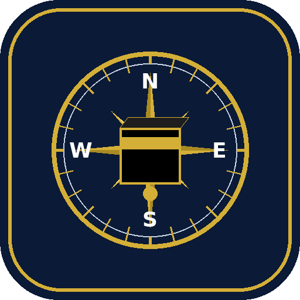

Find the Qibla direction and distance to Makkah — fully offline. A live compass dial with a gold Kaaba marker, Qibla bearings for 14 Pakistani cities, and an optional GPS button for your exact location.
Live compass dial • 14 cities • GPS location • Distance to Makkah
⬇ Download APK (v1.0)Compass accuracy depends on your phone's magnetic sensor. Calibrate by waving the phone in a figure-8, and keep away from metal, magnets and phone covers with magnets.
Need help? WhatsApp: +92 305 7867149